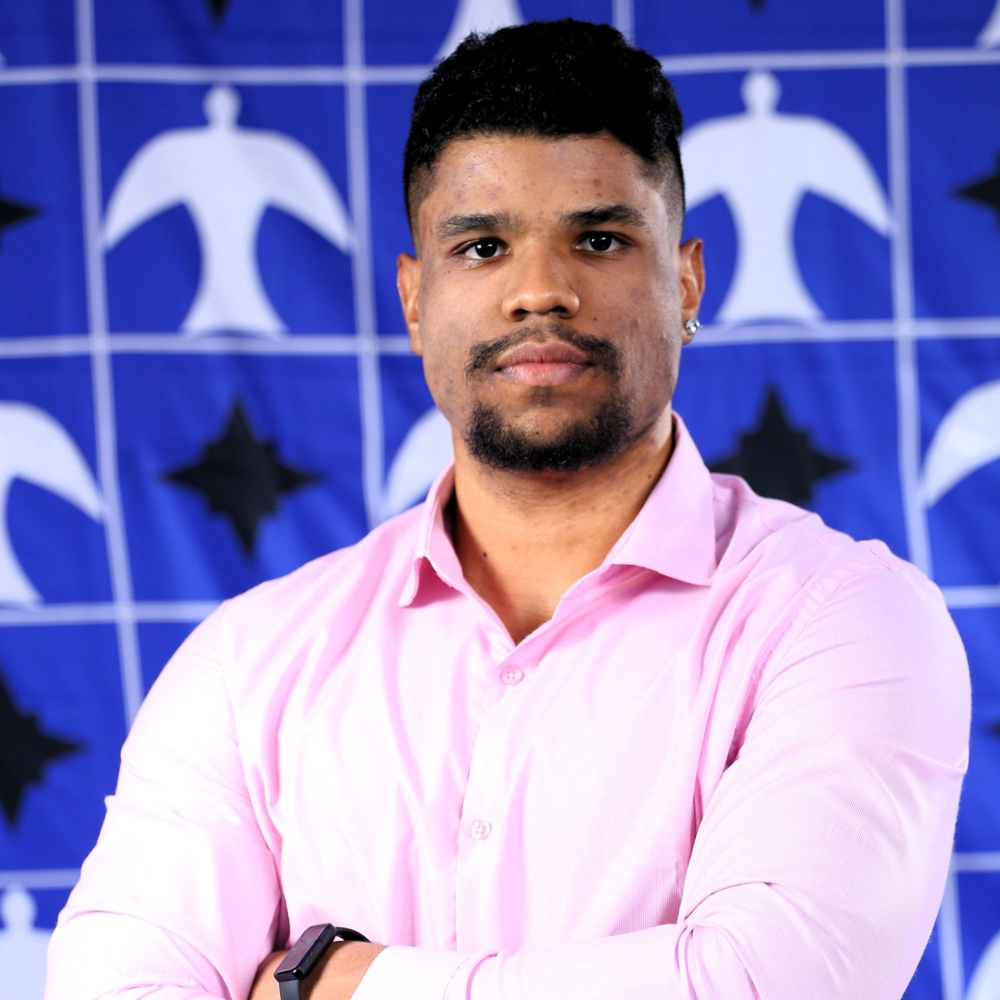
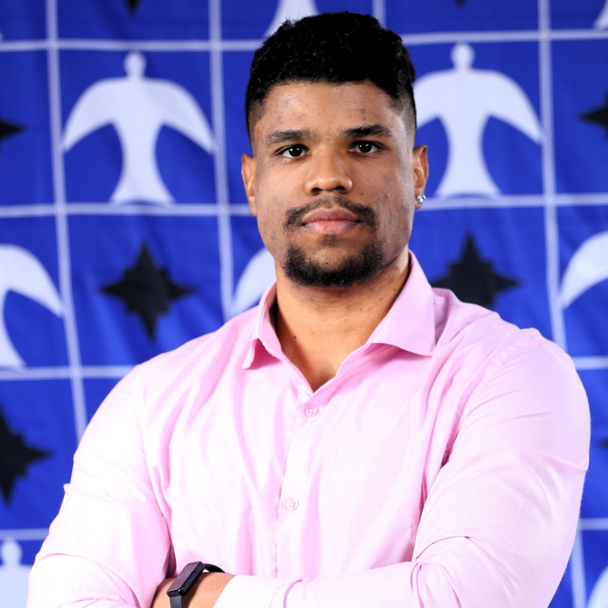

Minha aventura na área de Tecnologia
Durante toda minha vida, sempre me interessei por diversos temas distintos. Na escola, apesar de demonstrar maior facilidade e domínio na área de exatas, tive muito interesse em Ciências como um todo.
No período de escolha da graduação, já nutria interesse em Tecnologia. Nascido em 2000, desde pequeno interajo com computadores e, muito novo, já entendia como um computador funcionava. A área de tecnologia não me pareceu uma boa escolha à primeira vista por eu saber bem da complexidade e tempo necessário para se fazer algo realmente interessante e divertido. Portanto, via a área como mais uma profissão qualquer.
Durante a graduação em Física, iniciei meus trabalhos no Grupo Lago, uma empresa de franquias alimentícias que me acolheu e me deu suporte para iniciar minha saga na área do desenvolvimento. No início, como estagiário, minhas funções eram simples: extrair relatórios do ERP, cadastrar itens, verificar integrações e atender ao suporte dos clientes internos da franqueadora. Com o passar do tempo, fui evoluindo minhas habilidades técnicas e percebendo o quanto a tecnologia além de facilitar meu trabalho, podia gerar valor real em um negócio.
Me tornei um "mago do Excel" e quando percebi os limites da ferramenta, vi a necessidade de se gerenciar um banco de dados, gerar scripts de automações e telas mais personalizáveis. Nesse momento eu já era um desenvolvedor junior e não sabia. Como já entendia algo sobre UX, lógica básica de algortimos e as regras negociais da empresa, a transição para a área foi extremamente natural e tranquila, necessitando entender apenas os conceitos base da Ciência da Computação.
Com a evolução das minhas habilidades técnicas, me vi tentado a buscar uma vaga como desenvolvedor, uma vez que a área estava pagando cada vez mais e os programadores cada vez mais escassos. Decidi então prestar o concurso do Banco do Brasil na área de TI.
Fui aprovado. Em setembro de 2023 iniciei minha saga no Banco do Brasil. De início, já sabia que teria que me dedicar bastante para me destacar. Os gestores deixaram bem claro desde o início que o perfil que se destaca na TI do BB era o chamado Fullstack, programando desde a alta plataforma (Mainframe) e a baixa plataforma (Servidores Web).
E nessa eu me joguei. Aprendi linguagens clássicas como C e COBOL. Melhorei minhas habilidades em linguagens mais usadas atualmente, como Java, Javascript e Python. Além de entender mais sobre outras áreas como DevOps, Arquitetura, Mobile e Cybersecurity.
O BB também me deu a oportunidade de fazer uma pós graduação em Desenvolvimento Fullstack em uma das faculdades mais tradicionais de Brasília, o CEUB. Lá, pude alavancar meu conhecimento e avançar ainda mais na carreira, fazendo networking e praticando de forma constante assuntos técnicos que não teria tanto contato sozinho.
E essa é minha história na área de tecnologia. Atualmente estou desenvolvendo meus próprios SaaS's, tentando manter uma vida atlética e em constante estudo e aprendizado. A minha única meta profissional é estar sempre evoluindo.
 
